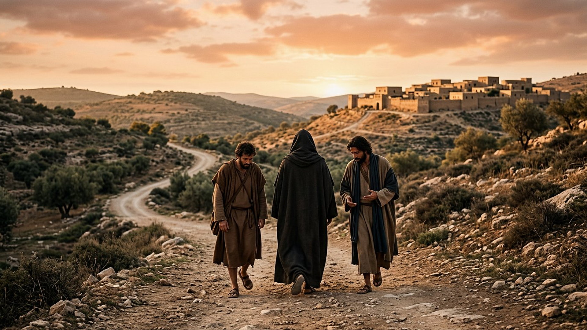
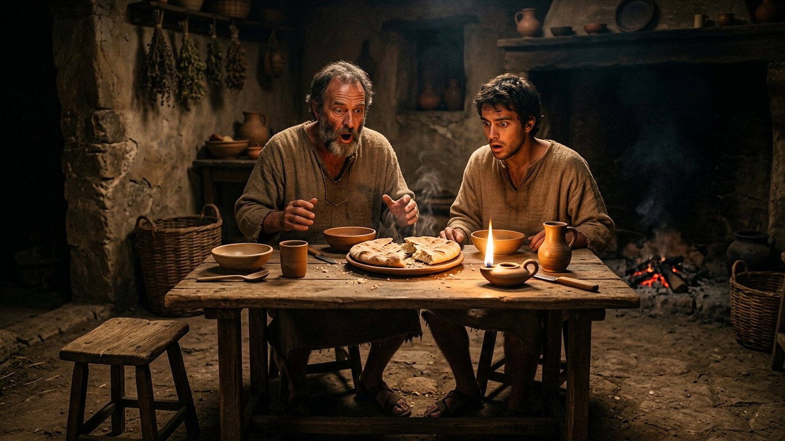
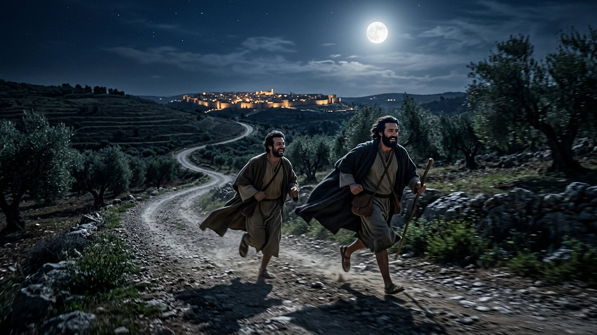

Salle 58 — Luc 24 ACCOMPLIE
Emmaüs : reconnu au pain rompu
« Notre cœur ne brûlait-il pas au dedans de nous, lorsqu’il nous parlait en chemin et nous expliquait les Écritures ? » — Luc 24:32 (d’après Segond 1910)
Reconstitution numérique — le compagnon de route vu de dos : le récit dit que leurs yeux étaient empêchés de le reconnaître (Luc 24:16), aucun visage n’est donc montré.
Deux marcheurs qui s’éloignent, un inconnu qui se joint
Le dimanche même de la résurrection, deux disciples — l’un nommé Cléopas (en grec, translittération : Kleopâs), l’autre resté anonyme — quittent Jérusalem pour Emmaüs (en grec, translittération : Emmaoûs), à soixante stades de là. Ils marchent en discutant des événements, le visage triste : l’exécution de Jésus, leurs espérances déçues — « nous espérions que ce serait lui qui délivrerait Israël » — et, le matin même, le tombeau trouvé vide par les femmes, sans qu’on ait vu Jésus. Un voyageur se joint à eux, feint d’ignorer tout, écoute leur récit, puis les reprend : « ô hommes sans intelligence, et dont le cœur est lent à croire tout ce qu’ont dit les prophètes ! » Commençant par Moïse et parcourant les prophètes, il leur explique « dans toutes les Écritures ce qui le concernait ». Au village, ils le pressent de rester ; à table, l’invité prend le pain, le bénit, le rompt — et leurs yeux s’ouvrent : ils le reconnaissent, et il disparaît. La même heure, ils refont la route de nuit vers Jérusalem (Luc 24:13-35, résumé sobre et citations d’après Segond 1910).
Dans la lecture retenue par ce musée, Emmaüs est la salle de la reconnaissance différée : le ressuscité n’y est pas reconnu à son visage, d’abord voilé, mais à une explication patiente des Écritures, puis à un geste — le pain rompu de la salle 56. Elle forme avec Thomas (salle 57) le diptyque des preuves demandées et reçues autrement : l’un voulait toucher, les deux autres entendaient et mangeaient, avant de comprendre que leur cœur brûlait depuis le chemin.
Le récit en cinq temps
De Jérusalem à Emmaüs, puis le retour de nuit, avancez d’une station à l’autre.

Le banc des preuves : quatre villages pour un nom
DÉBATTU
Où est Emmaüs ? Nicopolis, el-Qubeiba, Abou Gosh, Motza (EV-67)
Luc donne une distance — soixante stades, environ onze kilomètres (certains manuscrits anciens lisent cent soixante stades, variante débattue) — sans laisser de ruine signée. Quatre candidats principaux ont été défendus : Emmaüs Nicopolis, près de Latroun, avec sa basilique byzantine et sa longue tradition mais à quelque trente kilomètres ; el-Qubeiba (en arabe, translittération : al-Qubayba), à la bonne distance au nord-ouest ; Abou Gosh (translittération : Abū Ghawsh), sur la route de Jaffa ; et Motza (translittération : Motzâ), colonie romaine mentionnée par l’historien Josèphe à distance comparable. Vérifié : tous ces sites ont livré des vestiges antiques. Débattu : lequel est l’Emmaüs de Luc 24, les critères de distance, de nom et de tradition ne convergeant pas.
LECTURE PROPHÉTIQUE
Le pain rompu, signature de la reconnaissance
La séquence de la table reproduit, mot pour mot dans le grec, celle de la multiplication des pains et celle de la dernière Cène : prendre le pain, bénir ou rendre grâces, rompre, donner (comparer Luc 9:16 ; 22:19). Dans la lecture du musée, les deux disciples reconnaissent leur hôte au geste appris par cœur pendant trois ans — et non à un portrait : c’est la continuité avec la salle 56 qui fait office de visage. La disparition immédiate (« il disparut de devant eux ») interdit de vérifier davantage : la reconnaissance suffit, et elle renvoie en mission.
DÉBATTU
Une fin de Marc qui mentionne Emmaüs, brièvement
La fin longue de l’évangile de Marc — les versets 9 à 20 du chapitre 16, absents des plus anciens manuscrits complets et débattus par les spécialistes — résume l’apparition en deux versets : « il apparut, sous une autre forme, à deux d’entre eux qui étaient en chemin pour aller à la campagne » (Marc 16:12, d’après Segond 1910). La salle signale ce statut textuel discuté, déjà rencontré pour d’autres passages, sans en faire un argument ni pour ni contre le récit développé de Luc, qui reste sa seule source détaillée.
Quatre clés pour bien lire les disciples d’Emmaüs
1. Ils s’éloignent dans le bon sens des faits, le mauvais de l’espérance
Leur récit de route est factuellement exact : exécution, tombeau vide, vision d’anges rapportée par les femmes, vérification par « quelques-uns des nôtres ». Ce qui s’est effondré, c’est l’interprétation — « nous espérions » au passé. Le compagnon ne leur apporte aucune information nouvelle sur le week-end : il relit les anciennes Écritures, et les mêmes faits changent de sens. Emmaüs est la salle où le musée rappelle que les preuves ne dispensent jamais de l’interprétation.
2. Une explication qui commence par Moïse
« Et, commençant par Moïse et par tous les prophètes, il leur expliqua, dans toutes les Écritures, ce qui le concernait » (24:27) : le ressuscité se fait exégète plutôt que prodige, et fait porter la reconnaissance par les textes que ce musée suit de salle en salle — l’agneau (salle 46), l’alliance (salle 47), le juste souffrant (salle 48). Leur cœur « brûlant » pendant la leçon précède leurs yeux ouverts à la table : la compréhension chemine avant l’évidence.
3. L’hospitalité forcée devient le lieu du retournement
« Reste avec nous, car le soir approche » : le voyageur faisait semblant d’aller plus loin, et ce sont les deux déçus qui insistent, presque de force. Dans la maison, les rôles s’inversent — l’invité prend le pain, bénit et rompt comme le maître de maison. La salle y lit une constante des récits de ce musée : la reconnaissance advient à table (Béthanie, salle 53 ; chambre haute, salle 56 ; rivage du lac, salle 55), là où l’on reçoit sans calculer.
4. Le second disciple sans nom, place du visiteur
Luc nomme Cléopas et tait son compagnon : les lecteurs anciens ont proposé Marie, sa femme selon une lecture de Jean 19:25, ou Luc lui-même, ou Simon. La salle laisse la place vide, comme le texte : le compagnon anonyme est le siège réservé au lecteur et au visiteur, invité à faire la route, écouter l’explication et s’asseoir à la table. C’est aussi la seule apparition où le ressuscité est reconnu par des disciples hors des Douze.
Prescience n’est pas fatalité — un retour commencé la même heure
Ils avaient tourné le dos à Jérusalem avec une espérance au passé ; rien ne les forçait à refaire, de nuit, onze kilomètres en sens inverse. Une explication entendue, un pain rompu, et la route elle-même change de direction : la prescience des Écritures, une fois comprise, ne laisse pas les marcheurs où elle les a trouvés.

Salle 57 : Thomas, l’autre preuve reçue dans la même semaine · Salle 56 : le pain rompu qu’ils reconnaissent · Salle 39 : le tombeau vide dont ils repartaient
Écouter la salle
Transcription de la narration
Bienvenue dans cette nouvelle salle. Vous verrez d’abord deux voyageurs sur une route de collines au soleil couchant, accompagnés d’un troisième marcheur vu de dos, puis une table humble où un pain vient d’être rompu. Bonne visite à toutes et à tous. La visite avance en cinq étapes courtes. Prenez le temps d’observer chaque image et de lire les panneaux : ils présentent une reconnaissance inattendue, plusieurs villages candidats pour un même lieu, et les questions des spécialistes. Merci de votre attention.